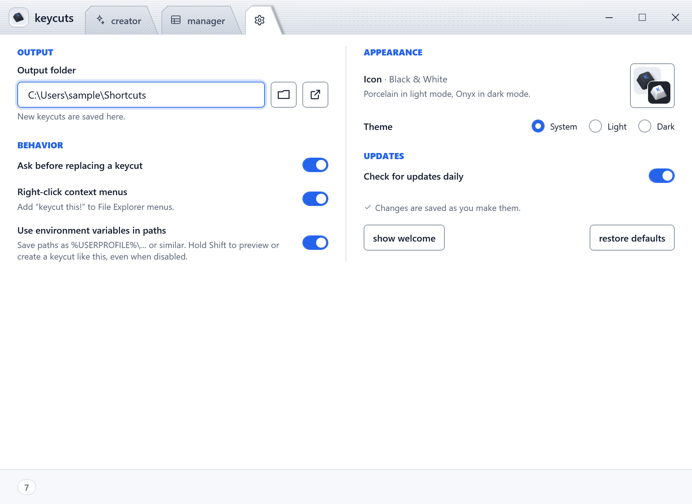

Before (today)

After (proposed)
creator
manager
—☐✕
Behavior
Output folder
C:\Users\sample\Shortcuts
Ask before replacing a keycut
Right-click context menus
Add “keycut this!” to File Explorer menus.
Use environment variables in paths
Save paths as %USERPROFILE%\… or similar. Hold shift to see or create keycuts even when off.
Appearance
Theme
SystemLightDark
Icon · Black & White
Porcelain in light mode, Onyx in dark mode.
Transparent icon background
Affects the taskbar, Alt+Tab, and shortcuts.
Updates
Check for updates daily
Version · 2.0.0
You’re up to date.
show welcomerestore defaults